Un soundtracker
est un logiciel qui permet de composer à la base
des musiques sur quatre voies avec des sons (échantillons sonores) |
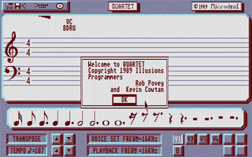
L'éditeur
quatre voies de QUARTET pour ST.
Quartet de Microdeal
Download
it ! (format PRG - 1ère version uniquement
en moyenne résolution - 373 Ko)
(Checksum
du groupe Equinox s'est basé sur les conseils et les explications
de Belzebub/ST Connexion pour créer ses propres routines) |
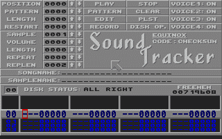
L'un
des premiers protrackers 'Domaine Public' pour STF.
le SoundTracker d'Equinox
Download
it
! (version STF - format MSA + docs - 433 Ko)
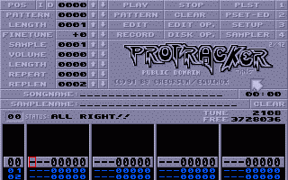
La
version évoluée du même protracker pour STE.
le Protracker d'Equinox/TBC
Download
it
! (version STE - format ST + docs - 431 Ko)
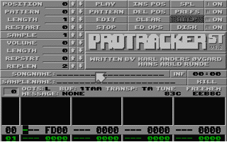
Le
meilleur soundtracker sur ST.
Protracker
ST v1.2
Download
it
! (version STF - format PRG + docs - 36 Ko)
Download
it
! (version STE - format PRG + docs - 37 Ko)
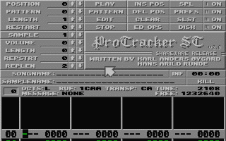
Version
finale du soundtracker sur STF/E/TT.
Protracker ST v2.0
Download
it ! (format PRG - avec 1 player GEM + 3
players STF/E/TT - 345 Ko)
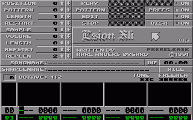
Version
DP du soundtracker Esion compatible STF/E.
Esion Xli ST v1.0
Download it !
(format PRG - 22 Ko)
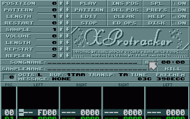
Une
des versions à partir du Tracker Esion pour STE.
XProtracker
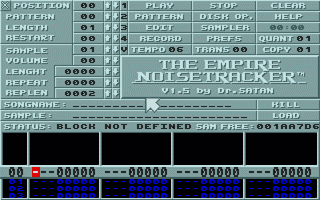
L'un
des premiers soundtracker simple d'utilisation sur ST.
The Empire Noisetracker de Dr SATAN
Download
it ! (format PRG - 36 Ko)
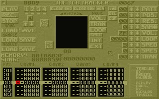
Le
seul soundtracker qui utilise ses propres
formats de fichiers musicaux sur ST.
TCB Tracker du fameux AN Cool
Download
it
! (version normale - format ST - 355 Ko)
Download
it
! (version crackée - format ST - 496 Ko)
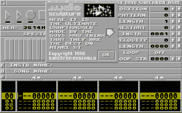
Le
soundtracker le plus innovant sur ST.
Audio Sculpture de Synchron Assembly
Download
it
! (version
PRG - 82 Ko)
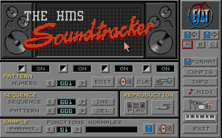
Le
soundtracker francais le plus complet sur STF/E.
The HMS Soundtracker d'ESAT Software
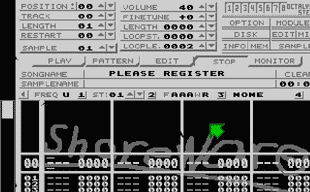
Le
soundtracker pour STF/E et FALCON sur 4,6 ou 8 voies.
Octalyser du Team Octalyser
Download
it
! (version STE - format MSA - 483 Ko)
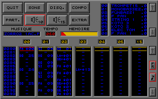
Atelier
musical pour STF/E qui utilise son propre format sonore
et n'accepte que la carte MV16 comme unique sortie son.
Music Master de Computer's Dream
Download
it
! (Disk 1 : version non crackée- format MSA - 272 Ko)
Download
it
! (Disk 2 : version non crackée - format MSA - 597 Ko)
[ATTENTION : necessite le key/dongle !]
(grand
merci à KikSoft/MjjProd pour m'avoir donné son logiciel
complet !)

La plupart des
Trackers et SoundTrackers sont téléchargeables dans les compiles
MuzaXx.


[
Divers | Demos |
Dentros | Mags |
Trackers | Players | Utils
]